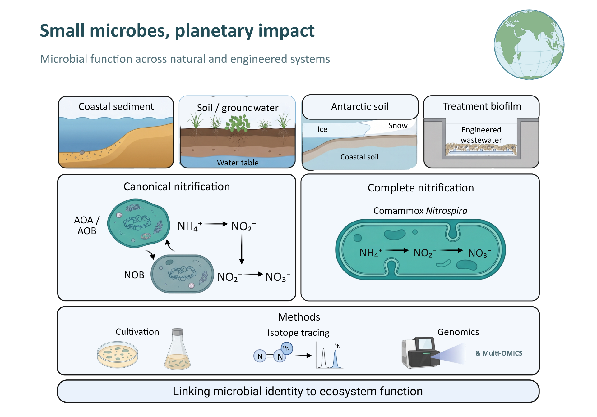

Welcome to HAN Lab
Health, Adaptation & Nitrogen
How do tiny microbes shape the health of our planet? We study the microorganisms that drive the nitrogen cycle—from soils and coastal waters to Antarctic ecosystems and engineered treatment systems.
Led by Prof. Penny Han, we connect microbial ecology, biogeochemistry, and environmental engineering to understand adaptation to environmental change, reduce nitrous oxide emissions, and support sustainable water treatment.


News
- Invited talk at Hohai University
- A new PhD chapter begins
- HAN Lab research at ISME20